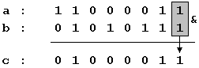

|
Boolean logic Operations AND, OR, XOR and NOT |

|
|
| |
|
Boolean logic Operations AND, OR, XOR and NOT |
|
|
| |
A bit is the minimum amount of information that we can imagine, since it only stores either value 1 or 0, that represents YES or NOT, activated or deactivated, true or false, etc... that is: two possible states each one opposite to the other, without possibility of shades.
Several operations can be performed with bits, either in conjunction with other bits or themselves alone. These operations receive the name of boolean operations, a word that come from the name of one of the mathematicians who more contributed to this field: George Boole (1815-1864).
All these operations have a predetermined behavior and all of them can be applied to any bit being anyone the value contained in it (0 or 1). Next you have a list of the basic boolean operations and a table with the behaviour of that operation with every possible combination of bits.
AND (&)
a b a&b 0 0 0 0 1 0 1 0 0 1 1 1
OR (|)
a b a|b 0 0 0 0 1 1 1 0 1 1 1 1
XOR (^)
a b a^b 0 0 0 0 1 1 1 0 1 1 1 0
NOT (~)
a ~a 0 1 1 0
These are the 4 basic boolean operations (AND, OR, XOR and NOT). Combining these operations any desired result can be obtained.
In C++, these operators can be used between two variables of any integer data type; the logic operation is made between the bits of the two variables. For example, suposing two variables: a and b, both of type char, a contains 195 (11000011 in binary) and b contains 87 (or 01010111 in binary). If we write the following code:
char a=195;That means, that we conducted a bitwise AND operation between a and b. The result (the content of c) would be the following one:
char b=87;
char c;
c=a&b;
01000011, that is 67.
| ©The C++ Resources Network, 2000 - All rights reserved | ||
|